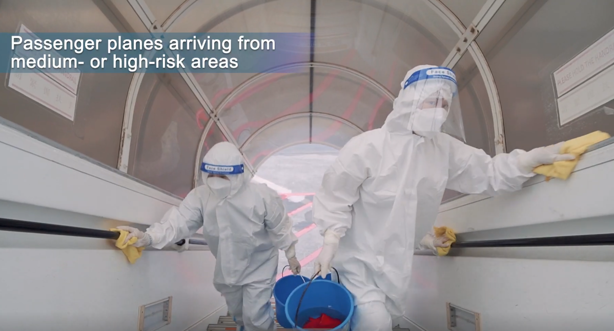

Now that the epidemic is becoming a regular occurrence, it is no longer possible for people to be isolated at home every day as they were at the beginning of the epidemic, and for everyone going out is always inevitable. The choice of means of transport is varied and it is important to protect yourself effectively in different modes of transport. This video shows how to protect ourselves effectively when travelling on the underground. Of course, not going out is always the right choice.
There will always be many times when we have to travel far away, sometimes even through medium to high risk areas. But there is very little we can do when we are flying. Make sure you wear a mask when boarding, and don't forget to show your nucleic acid test and cooperate with the temperature test.
